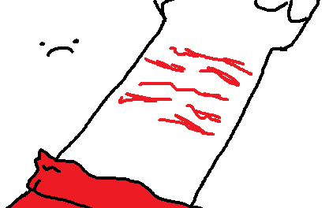

> Tragic stuf...

You have been self harming since a lot of time, but this is really dangerous, you could even die if you try to go deeper, and you know that, but you cant just stop it, every change has its own difficulties
lets move on onto something else
Something.. else? >
Start Over |
Go back